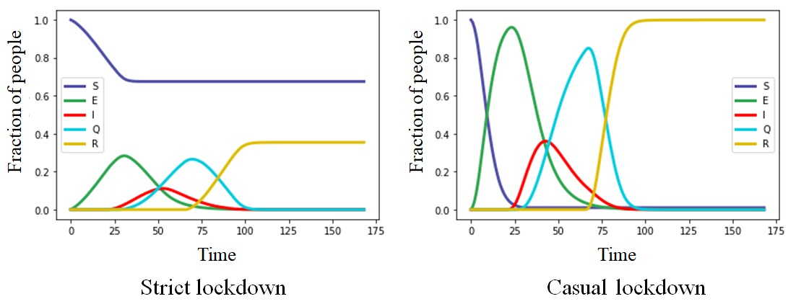
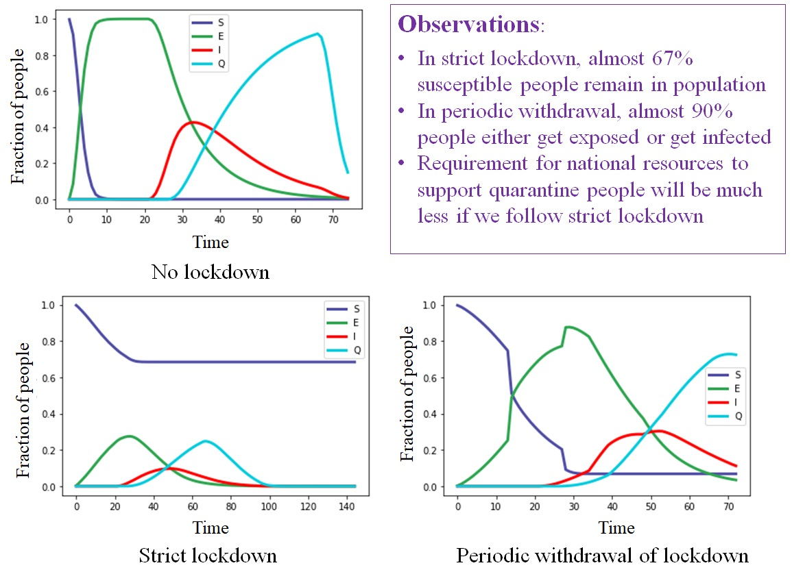

Epidemiology for 5th Grade
Bunch of oversimplified simulations to understand epidemic spread
Chapter 2
In this global panic due to the rampage of COVID-19 worldwide, the worry associated with lock-down is constantly bothering everyone in India. After Prime Ministers’ announcement of nationwide lock-down for 21 days on 24 March 2020, many opinions are constantly crowding the social media. Through these days of lock-down, we have witnessed stories from both sides: the ones that can surprise us about how seriously people can take this social responsibility of safe distancing, and the ones of how negligent people can be about that. Stories about how much we can explore and adapt in this new scenario, and how much people can suffer if they cannot.
Now we are standing on the verge of lockdown extension with a confusion about what could be ahead of us. On one hand, these 21 days might have caused serious economic damage to our country; despite substantial efforts from the government, several people have suffered from severe consequences. Around the country, numerous people from vastly diverse background, stuck in places of work, are desperate to get back to their home for a spectrum of different reasons. For another large group, this lock-down seemed unnecessary, because it affected their daily routine and caged them inside the walls of their homes. On the other hand, with this pandemic, growing and claiming lives every day, leaving huge populations exposed to a virus we cannot fight, grasping countries one after another, crawling its way through our towns and our localities, left us with no other choice but to save ourselves by maintaining social distance.
So, how should we deal with this confusion? Lots of questions are constantly coming into our minds nowadays: Will it be problematic if the lock-down is relaxed a bit, and allows us to move to shorter distances: may be beyond our locality, and around nearby towns, say?
Would it really hurt a lot, if lock-down is withdrawn just for some time? What can go wrong if long-distance travels are allowed for a week at least? Cannot we even celebrate festivals for a couple of days, and then go back to lock-down?
We are trying to answer these questions today in our toy simulation series.
Let us consider, the area shown below is a region in a country, home to several people, who live in some major crowded towns and some less crowded suburban areas. Each small box is one house. In a lockdown, people are supposed to stay in the house (d=0). They are allowed to go to nearby shops, or banks if needed. We consider, on average, just the boxes around a house defines the respective locality (d=1). Boxes one more step away, are the localities nearby (d=2). Moving one more step further (d=3) is like moving around the town freely. Beyond that, is venturing outside town. You can understand this by seeing the image below.

Now, in this area, where thousands of susceptible people (like most of us, who can get infected, indicated by BLUE dots) live, suppose COVID-19 has entered and infected a very small percentage (almost 0.0005%, indicated by RED dots) of people. These infected people unknowingly came in contact with several others, when there was no lockdown. These people, who are exposed (or asymptomatically infected) to the virus, are indicated by GREEN dots. During free movement (no lockdown), very few red dots can generate a large number of green dots. Both these green dots and red dots can spread the infection among blue people. Suppose, just after 3 days of free movement (you can see our previous post on movement control, persistent infection and social distancing), the lockdown has been implemented. By that time, some infected people have been identified, and will soon be quarantined. But, we have to remember that before the lockdown, the exposed people with the virus have moved around and reached to a completely different location. This is our current scenario, and we study the system from this initial condition.
Now, let us consider the 1st case. Lockdown starts in our toy-population, and everyone obeys it exceptionally well. They either stay at home (d=0), or they visit places inside their own locality (d=1) if needed. This scenario can be seen in the left-side video. We compare this with a mere increase of d=2, where people visit neighbouring localities, shown in the video on the right. We consider that soon after one becomes infected (with symptoms), that person is supposed to be quarantined (shown by CYAN color). Cyan people cannot spread the infection further and infected people (both red and cyan) finally recover and are shown by YELLOW dots. (They can also die of the disease, but we have not considered any deaths, to avoid unnecessary panic.)
Keep in mind that the green (asymptomatically infected) and red (infected) patches estimate how far the infection spreads. Small patches on the left window, prove that the number of people who even come in contact with the virus is quite less compared to the case on the right. This observation answers the first question about relaxing the lockdown and moving around freely within the town (d=3); we see that even moving to neighbouring localities (d=2) can bring about drastic changes, in favor of the virus, when we don’t know who got exposed to it. The images below compare the number of susceptible, exposed, infected, quarantined and recovered for both the cases. The most important observation is when lockdown and social distancing is strictly maintained, almost 67% people safely remain in the susceptible state, unaffected by the virus, in contrast to 0% in d=2, where everyone is either exposed or infected eventually.

Here, we must also analyze one thing: the huge population density of our country. The video below shows that if we consider population only three times less dense, the necessity of this coordinated social action might be much less, and in that case, visiting neighbouring localities (d=2) might not result in causing an epidemic.
Finally, let us come to the other question that is intriguing to us all. What could be the effect of withdrawing the lockdown? What if long-distance travels are allowed for a week? Or festivals are celebrated for just a couple of days? We show the effects below through simulated videos: while the left window shows lockdown within home/locality like the previous case, the window on the right shows if for two different days, people are allowed to visit anywhere they like (d=4). The effects are surprising, and extremely in favor of the infectious disease.
See how the no. of patches take a jump as soon as the day-without-restriction passes. Increasing the number of free-days to 2 or 3 enhances the infection, and affects everyone eventually, as if no lock-down was ever implemented. The image below compares the two scenarios: periodic lockdown withdrawal with very less frequency and no lockdown.

So, we guess this clarified your doubts about the present situation a bit, and proves our point of obeying the government implemented regulations, through which, as a nation, we can finish this race maintaining the statistics in our favour. Awareness regarding social distancing is the social vaccine; let us use it as one of the major weapons to fight against this virus. Stay safe. ~ Sayantari and Saumik